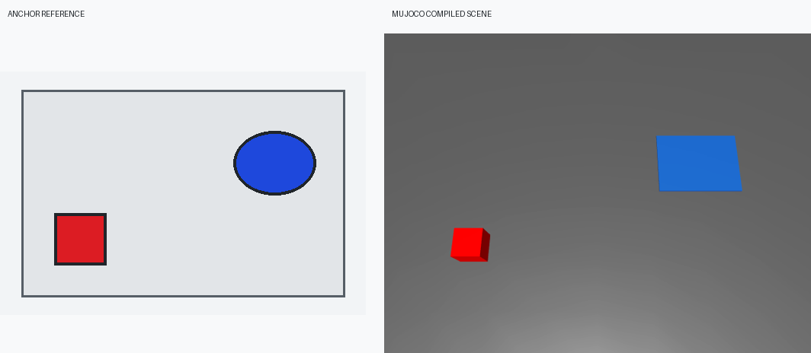
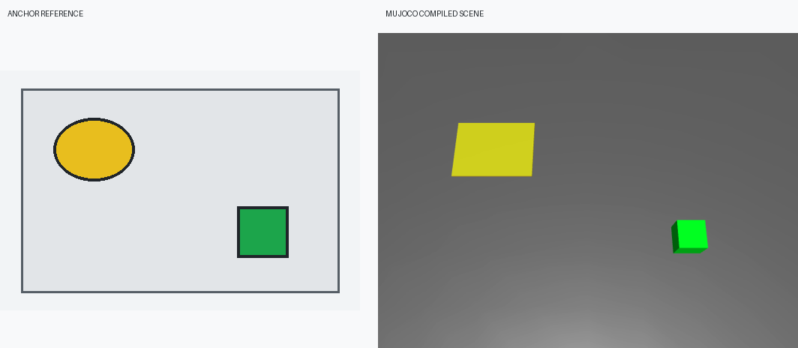
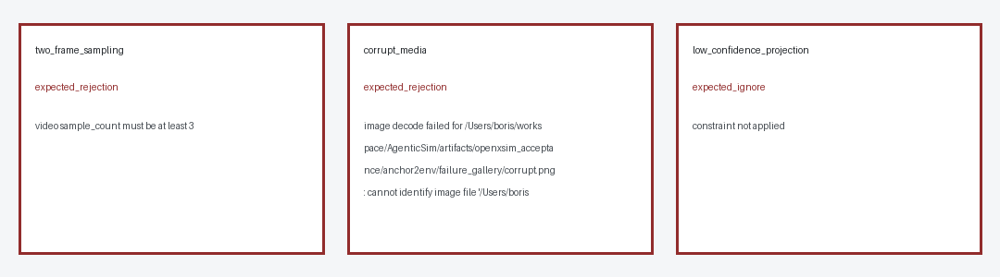
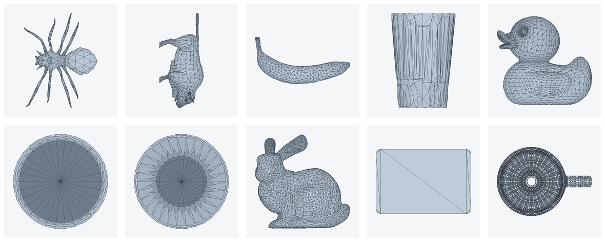
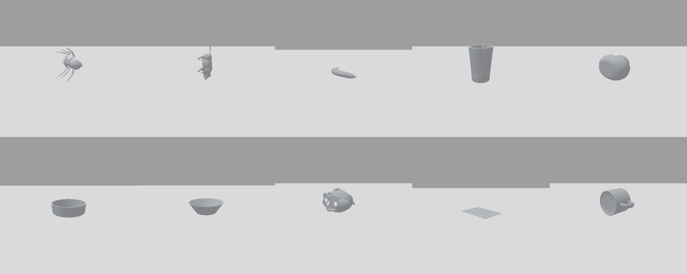
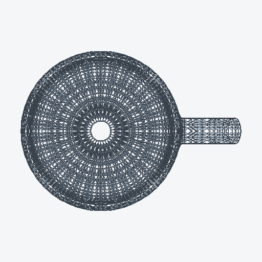
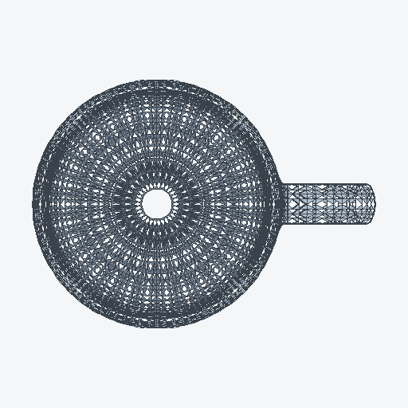
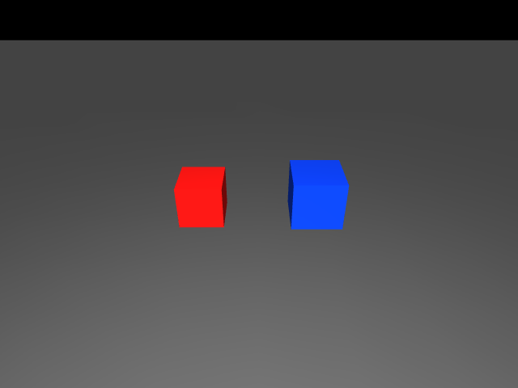
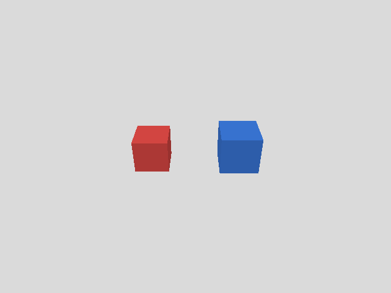

EXECUTIVE VERDICT
宽口径验收状态
严格双语 SceneSpec、真实 RoboTwin catalog、grounding、bounded solver、SAPIEN validation 与 resolved replay。
2 张图片与 1 个完整视频；固定输入可复现，保留 uncertainty、消融和失败图库。
3 个固定官方来源与 10 个异构 OBJ；哈希、转换、碰撞代理、预览和 MuJoCo runtime 已通过。
刚体、单关节和相机敏感场景由同一版本包从 MuJoCo 迁移到 SAPIEN。
SHARED CONTRACT
四个入口，不是四套孤立实现
[INFERRED] [CONFIDENCE: HIGH] Anchor2Env 是 Text2Env 的多模态约束入口，AssetScout 为两者补齐缺失资产，Open-X-Sim 负责把同一环境包编译和验收到不同后端。
Image / video
Native simulator env
Source provenance
Hashes
AssetBundle
TaskSpec
MuJoCo
SAPIEN / MetaSim
ConformanceReport
Typed blockers
01 / PURE TEXT2ENV
自然语言到 RoboTwin 可重放场景
| Seed | 视频 | 帧率 / 时长 | 唯一解码帧 | SHA-256 |
|---|---|---|---|---|
| 0 | 120 frames | 12 fps / 10 s | 27 | 81d1ceaa... |
| 17 | 120 frames | 12 fps / 10 s | 22 | 9a203e81... |
| 99 | 120 frames | 12 fps / 10 s | 31 | 48d87d38... |
实现边界
[KNOWN] [CONFIDENCE: HIGH] `SceneSpec` 禁止模型输出 Python、资产路径、model_id、坐标和四元数；解析器只接受受限类别、属性、区域和关系。
[KNOWN] [CONFIDENCE: HIGH] grounding 记录候选、打分和拒绝原因；solver 用固定 seed 的有界采样与回溯产生最终位姿。
[KNOWN] [CONFIDENCE: HIGH] runtime validation 检查边界、重叠、语言关系、稳定性、接触、机器人初始碰撞和 head-camera 可见像素。
02 / IMAGE + VIDEO ANCHORS
Anchor 改变几何，但不伪造隐藏信息


消融
[COMPUTED] [CONFIDENCE: HIGH] 三个场景中，anchor-conditioned 输出都改变了对象和目标区域的几何位置；报告保留 text-only 与 anchor digest、逐对象位移和最大位移。
打开完整 Anchor2Env 验收 JSON
03 / AUTONOMOUS ASSET ACQUISITION
下载网格不等于可用仿真资产




| 来源 | 固定 commit | 许可记录 | 入选资产 |
|---|---|---|---|
| google-deepmind/mujoco | f841b67... | Apache-2.0 | mug, card, bunny |
| bulletphysics/bullet3 | 63c4d67... | Zlib | banana, cup, pan, plate, duck |
| assimp/assimp | a939f24... | BSD-3-Clause | spider, character |
04 / CROSS-SIM REUSE
同一包迁移，损失必须显式计量


| 场景 | L0 | L1 | L2 | L3 | 专项指标 |
|---|---|---|---|---|---|
| Rigid drop | pass | pass | pass | pass | 4/121 原始短暂接触差；50 ms 去抖后 0 |
| Hinged cabinet | pass | pass | pass | pass | door_hinge 名称与 121-step qpos 全匹配 |
| Camera alignment | pass | pass | pass | pass | 红蓝中心误差分别约 0.003 |
CLAIM BOUNDARIES
通过的范围与仍禁止的结论
L4 未评估
[KNOWN] [CONFIDENCE: HIGH] 当前只到 L3 trajectory/contact/camera/joint conformance，没有跨后端策略成功率统计。
资产物理仍有限
[KNOWN] [CONFIDENCE: HIGH] 10 个外部资产是刚体网格；未知真实质量、惯量和材质参数保持 unknown，不用默认值冒充测量值。
Stage 5 延期
[KNOWN] [CONFIDENCE: HIGH] Text2Env MVP 不包含 stacking、inside、articulation 初始关节、复杂多层支撑和 VLM rendered-scene critic。
AUDIT SURFACE